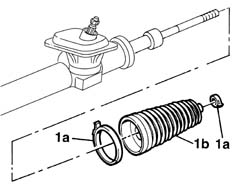

4120A30 l/h or r/h steering box boot (one) - replace at bench
- Path
- Procedures > 41 STEERING > 4120 STEERING BOX > 4120A rack and pinion steering box > 4120A30 l/h or r/h steering box boot (one) - replace at bench
- Kind
- repair procedure (removal / refitting; the operation number is the code)
- Applies to
- all engines; all production periods
- Interactive page
- https://sloeber94.github.io/elrnDB-fPnd/en/#/2752791
Applies to: all engines; all production periods
 Dismantling
Dismantling
 Reassembling
Reassembling4110B14 steering links - r+r with steering box removed
1. Remove the clips (1a) and withdraw the steering box dust excluder (1b).

Applies to: all engines; all production periods
Reassembling
DismantlingFit the new steering box dust excluder and secure it with new clips.